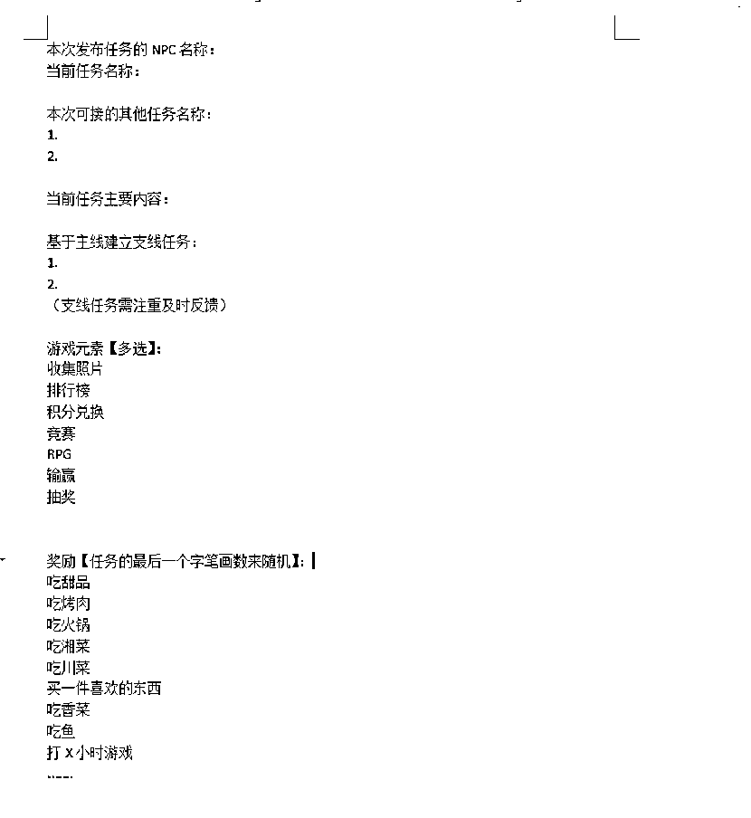
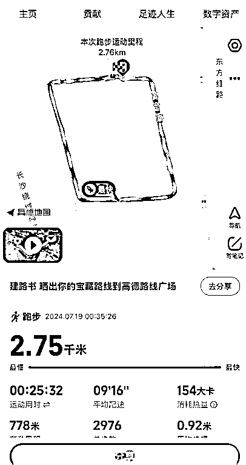
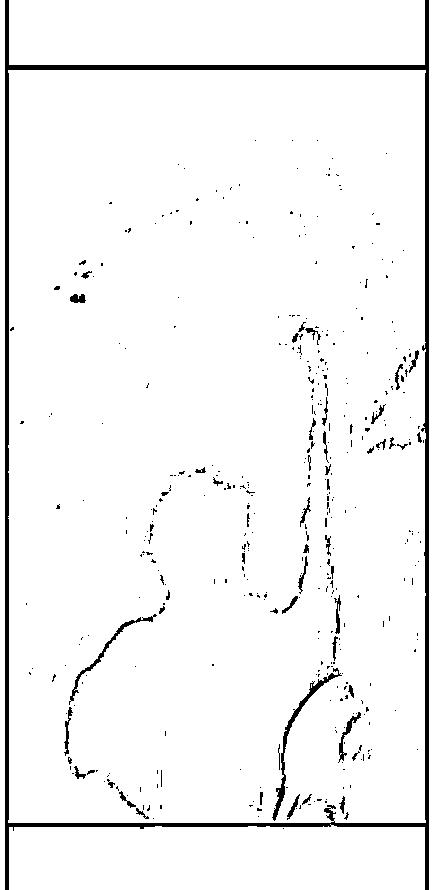
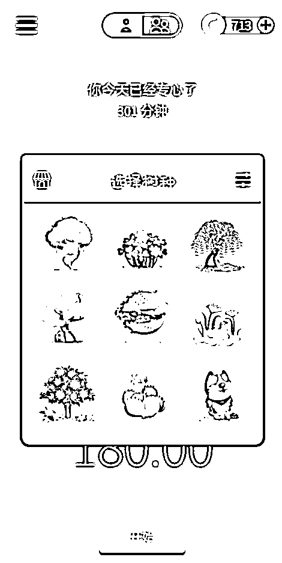
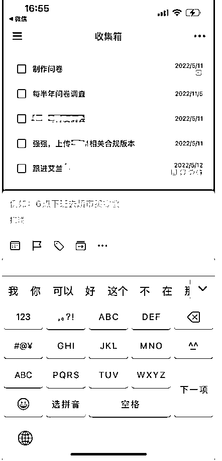
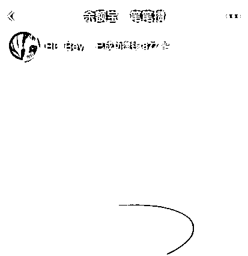

来源：https://shengcaiyoushu01.feishu.cn/docx/ZatSdqHCGoLqp4xQjNJcBwpJngf
大家好，这里是正义蟹不肉
INFP比较喜欢折腾
可以叫我老蟹，之前在鹅厂作为产品工作过2年
前些年出来创业，做过国内的联盟链，也做过Crypto(Web3)的CW404项目
但今天不聊背景，不聊工作，想和大家分享一些我的人生课题。
————游戏化思维
大概是从毕业之后吧，因为本身不是什么非常牛的大学。像大部分大学毕业生一样，毕业即失业。
毕业之后也被家里匆匆安排进了建筑类的央企做办公室的工作，只是每天早上起来早会，散会，吃早餐，对着电脑刷剧，或者给领导复印文件云云，又或者是有领导过来安排工作之类的。
这样的生活一眼望到底，似乎现在部门里的“老人”就是未来的样子，每天谈吐里透露着对生活的不满，对同事，对邻居，对身边朋友，对甚至是对家人的不满。
——人就是这样一个相对的动物的，当你永远盯着黑暗，那你的眼里就全是黑暗
越努力越辛酸
办公室的工作非常清闲，几乎都没什么重要的事情，每天的工作主要围绕等靠托来开展，就好像你永远知道有事情在，但是你一旦想认真的把事情处理完的时候就会发现，你和旁边格格不入，因为别人嘴里的事情永远最急，而你总是会遇见更急的事情。
——是的，越努力，越辛酸。
即有赋闲，又有余粮，即不担心吃不饱，也不纠结穿不潮
但似乎永远会有一把名为年少的剑悬挂在头的3寸之上，
就好像穿了很久的臭袜子套上一双AJ1，你只要不脱鞋，别人很难闻见里面的恶臭。
但你永远都在介意，甚至一旦旁边的人鼻子不小心抽一下，你都得不好意思的收收脚。
接触互联网就比较早了，大概5岁的时候就被老爸带着去网吧上网，在我有意识后，最早体验到游戏的乐趣，是在老爸打不赢的cs局，“替父从军”获胜后，就会能在旁边再开一台机器想玩啥，接着这样的机会也让我打开了游戏世界的大门，从征途，传奇，天龙八部，红警，流星蝴蝶剑，War3，WOW，一茬一茬的游戏伴随着我的成长。
在不同的游戏里，主角总是能够经历一些精心的设计，让我们伴随着他，一起把困难闯过，到达一个又一个山峰，我们总是能够知道，即便困难，这也是一定能够克服，明明是那么让人痛苦但又不自觉地沉浸在一个有一个挑战之中。
那现实生活的我们又为什么要变得麻木且置身浑噩呢？
逐渐丧失参与的意愿，失去工作、生活的动力，被自己默认剥夺应有的权利，被切断本应存在的联系，难道这就是我们和生活的联系，并要这样不断的持续下去？
慢慢的我开始从生活中接受这样的思想，我才是自己的主角。
而我同样也是我自己生活的游师。
这是一种从第一人称上的剥离，当你第一次以一个第三视角来看待自己的时候，会发现生活会变得不再那么同质化，那些你的烦恼和想法，会变成你需要去思索和考量的任务。

你会从纯粹的感情世界抽离出来，去碰撞一个叫做理性的自己，在游戏设计师的眼里，需要控制主角去完成自己的想要达成的目标，而你便会成为控制自己的——骑象人。
乐趣能够为生活带来很多事情。
几千年前人类创造出了称为“游戏”的东西，它能够挖掘乐趣带来的巨大精神力量。每一款设计精良的游戏都可以激发我们内心潜力的导火线，并为之产生巨大的动力，当你巧妙的帮助自己运用这些游戏经验，可以极大的去提高自己的幸福指数。
而这一游戏化思想的魅力在于调动乐趣，无论是日常生活，交朋友，做事情，设立目标，完成自己的目标甚至是工作中，都会大大的改变，而且这一改变大多数时候是正向的。
当然，我们这里提到的乐趣，不是暂时的乐趣，而是深度乐趣，是由于专注和彼此之间互动而产生和体会到的愉快感。
尤其是在热门日益同质化的今天，一个有意思的人，比一个特别厉害的人，对我而言更来得有吸引力。
游戏化是一门特别有意思的学问，他甚至可以运用到商业，产品，运营，营销当中，而且我认为，游戏设计是非常困难的。
所以我在这里想要介绍的是——生活游戏化
唯一目的：
帮助我们从必须做的事情发现乐趣，通过让流程有趣，而让自己获得快乐。
ok，让我们一起来简单的体验一下生活化自己的游戏，首先让我们来以一个具体的事情举例吧。
最近一直在进行的我的跑步游戏。
让我们来抽象这一场景：
——人物：我
——当时的情绪：乐天，又懒，又想让自己去运动（这里很矛盾，但人就是一直矛盾的）
——目的：
主线任务：跑步3圈
支线任务：待定
——场地：附近的产业园
——时间：大晚上

这里简单的抽象之后，跑圈这一举动被我想要设计成为了QQ飞车，或者是跑跑卡丁车之类的跑动游戏，但由于发现自己其实是一个很懒的人，我需要设计一个支线任务来帮助自己更好的完成主线。不然很容易跑完一圈之后就撤退了。
于是我设计了一个支线任务，买了1瓶饮料（东方树叶），并在第一散步的过程中，放在了起跑的位置。
想到这里我发现似乎还是不够（对我这样一个很懒的人而言似乎失去了监管机制）于是我又给自己设计了一个支线任务，打开了手机录制视频，在视频里说明了规则：每跑一圈喝一口水，大概在三圈的样子会喝完。
在完成跑步这个任务之后，剪辑成一个视频发布在自己的社交平台，去帮助自己阳关运动人设建立。
（事后总结：其实我觉得买两瓶水放在对角可能效果会更好，因为一圈比较长，获得反馈的时间还是太长了，尽管我完成了这次的主线任务）
总结我上面的所有举动我们可以把整个流程抽象出来：
1.建立面板确立主线：基于场景建立自己的人物面板，并且完成自己的主线任务。
2.建立支线任务：思考关于主线任务是否会缺少乐趣兴致，设计一些支线任务来支撑主线任务的完成，支线任务需要能够量化且不违背主线任务的初衷，例如跑完一圈可以喝一瓶，这一瓶差不多三口可以喝完。本质是：让主线完成的过程中保护自己的情绪是积极的，他会在完成支线任务时获得快乐。
3.监管机制：判断是否需要建立监管机制，可以是发布朋友圈或者是剪辑视频，或者是是先跟朋友打好招呼，例如我跑完步来找你玩儿，之类的云云。这件事情的本质是，向第三方做出承诺。（要基于场景）
4.实践并且不断丰富：然后去实践，并在过程中，不断的去继续建立自己的支线任务，让这个游戏更加的有意思，游戏的设计都不是一蹴而就的，再厉害的游戏设计师，也绝不可能一次就拿出一个完美方案。
（我在我的跑步游戏里，加入不少小DLC，
例如
1.有一个路灯特别有意思，刚好有树，由于角度的原因会把影子拉长特别像怪物，于是我路过树下面的时候会慢一些，拍照

2.有一个位置特别臭，每次路过的时候我都会默默的和自己比试，这次憋气的时间会更长一点，我记得第一次是12秒，第二次好像更久了。。因为没想到12s的时候还是有臭味。
candy：这条是补丁，这里是想要告诉大家，这些支线任务的完成必须是及时反馈的，不能是我当下跑完一圈，我明天可以去吃个蛋糕，这样的不行！！！！需要立刻！！立刻马上让自己获得快乐！注重及时反馈
原本小编告诉我，让我写工作游戏化的方法，但是我说实话，我并不觉得工作游戏化很重要，对我来说，工作仅仅只是我生命中很小的一部分，他是我的生活服务的，对我来说微不足道，所以我换成生活游戏化的方法。
生活就像一款RPG（角色扮演）游戏，每个阶段都有不同的目标和挑战。我们可以通过“副本挑战”的思维方式，把日常琐事设计成一段冒险旅程。
每个不同的“副本”都有其特定的目标和奖励，可能是一大笔钱，也或者是一些无形的资产，例如认知，见识，一段良好关系的产生，完成它可以带来成就感和满足感，偶尔失败也无需气馁，这只是主角成长中经历的一段插曲，甚至可能是“剧情杀”带来的必经考验。
生活管理的游戏化改造
可以借用一些日常APP来进行的时间管理、财务管理或任务管理，都是可以游戏化。
例如：
时间管理：使用“番茄闹钟”，来记录当下这个时间的自己。
例如设计15min时间只做一件事情，在完成后，会得到一些番茄币，这些番茄币，能够兑换更好看的倒计时闹钟，或者是更好看的皮肤，在多次完成后，也能够获得很多有趣的成就，像解锁游戏关卡一样，逐步看着自己一路完成目标；
（这里我是用的forest，好久没用了我在网上找的截图）
就可以选择不同的树种树，

任务管理：可以设计自己的ToDoList，
在滴答清单中在前一天为自己的每日任务清单分配不同“经验值”，
完成后允许自己兑换奖励，
比如一杯奶茶，一顿大餐一场电影，甚至是一个好看的英雄皮肤，衣服。这是你自己的奖励，你只用自私的考虑你自己就可以；

财务管理：支付宝也是推出过笔笔攒的任务，用理财工具设计“财务任务”，比如攒够旅行基金或还清小额贷款，或者奖励自己，奖励父母一场久违的旅行。

与人协作的趣味设计
通过和他人的交互，可以更好的增加一些团队协作的乐趣：
和朋友一起组织“烧烤大作战”，各自分工，设定倒计时和各自的“任务目标”，率先完成的队伍可以享受排名靠后哥们儿的“秘制烤串”，不用在意这是惩罚还是奖励，当你自以为骄傲的啃下这串儿时，新的游戏已经开始了！
和小伙伴一起约好健身，用跑步机排行榜追踪进度，每次打卡的时候，如果看到他的排名在你下面，一个拍照转发一气呵成，晚上见面的时候，少不了一手相互问候，下次跑步的时候莫名其妙的就多跑了几公里，你说，我在内卷？嗯，但我今天排名在你上面。小趴菜。
虽然不是很想在这篇文章里面分享工作，但是还是架不住小编，还是也简单分享一下我们在用的协作机制把，完成一个里程碑节点我们都会一起去搓一顿，无论成功或者是失败，但我们一起完成了，成功就分享喜悦，失败就分享经验教训，当然这一切的前提是——目标一致且彼此信任。
虽然前面总是说一些好的部分，但是无论如何，总有枯燥和高压的时刻，首先了解它是客观存在么？还是只是我自己给予的压力，如果是真实存在的，承认他，提出自己的解决方案，如果仅仅是情绪给予的压力例如无聊的生活，或者是存在的压力需要消化，通过游戏化包装，我们能让这些瞬间变得更有趣、更值得回味。
无聊生活的游戏化包装
对日常任务进行趣味包装：
和朋友分担好任务，把家务变成“寻宝游戏”，在对方任务的房间藏好隐藏的“奖励”，当你彻底清洁干净时候，才能够找到这个奖励，谁先完成就可以获得这个奖励（例如喜欢的零食）；
学习新技能时设计“角色升级”机制，首先掌握度的节点，然后理清自己的学习计划，记录每一次进步（比如掌握一个新单词或一项新技能）并且在不同的程度节点，给自己设计奖励，可以是不学一天，可以是一场电影，可以是一顿美食，像攒技能点一样提升自己，也像自私鬼一样奖励自己；
压力处理的游戏化方法
将压力视为“游戏中的boss”，用战术和技术来狠狠给他解决掉，我教你两招：
通过冥想或深呼吸的方法，我们可以给自己恢复“Hp”，通过记录每天“平静时长”（深呼吸的次数，或者是冥想的时长）来感受自己状态的回升时间，去锻炼自己的抗压能力；
彻底摆烂法：异化这个压力，把这次的事情想象成一场“极限挑战”，自己已经被深深包围，已经无路可退，唯一能依靠的只有自己一腔破釜沉舟的孤勇，你将直面所有的紧张和压力。彻底的放下包袱，告诉自己“最差也不过如此”，与其跪着输，不如站着死，让内心被勇气充斥，而不是懦弱。你会爆发出一种平静，反而会激励自己去更好的应对。
系统设计过于复杂 很多人在初步尝试生活游戏化时，喜欢一开始就直接设计一个庞大的体系。
或者照搬一些类似创作者在互联网上的成熟系统模版，作为一个初级的游戏设计者，直接把一天拆分成无数个任务节点，设置了各种莫名其妙的规则和奖励系统。
结果发现维护起来太费力，执行几天就放弃了，轻松一点，这是你自己的游戏，并不需要跟任何人比较，在你的游戏你，你就是自己唯一的坐标系，你就是直角坐标系懂么？
当然这很常见，可以读一本书叫做《微习惯》，如果你想要保持自己的健身习惯，你甚至只需要现在，站起来，然后做一个俯卧撑，就这样，但是请务必记住！每天你都需要做。
如果这你都完不成？Oh man ？what can i say？
奖励机制不合理 这里我只提到了奖励机制，不是奖罚机制，罚？我的游戏，你还想要我罚我自己？开什么玩笑，在我的游戏里，我就是GM，就是上帝懂么？
但奖励的设计非常重要，不能过于随意，要于你的任务难度挂钩，这个难度是一个非常“非标”的指数，例如你是健身大佬，你跑5公里，跟玩儿一样，你要奖励自己一顿大餐，那不是开玩笑么？
但如果你是初次尝试的新手，跑完5公里，而且坚持了好几天，当然如果第一天5公里很吃力，那第二天可以跑1公里都行，但请坚持下去，对自己好点，去吃一顿大餐把。
奖励的成都要和这个人物难度挂钩，奖励/任务>1,奖励太过频繁（让成就感变得廉价）；奖励/任务<1，太难达成（导致挫败感），最终让整个过程失去了吸引力，也失去了游戏化的目的，即之前说到的，
唯一目的：帮助我们从必须做的事情发现乐趣，通过让流程有趣，而让自己获得快乐。
坚持不下去怎么办？ 实际上，无论多有趣的设计，都会有因为太多次重复，或者是一直完成不，导致逐渐失去兴致，遇到坚持不下去的时候。刚开始动力十足，但中途因为疲惫、琐事或新鲜感消退而放弃。
这就是到了我们游戏设计师努力进化的时候了，你就是自己的领导，为了更好的帮助自己，与自己和解，让自己获得幸福，去接触更多不同类型的游戏，找到自己的兴趣点，平衡游戏数值，了解游戏的机制，导演好自己这部戏，去保护好内心的自己。
但是，相信我，当你作为游戏设计师不断努力成长的时候，回过头。
你，对，就是你，已经是无比强大了。
这是你设计的游戏，而你就是游戏里你挑的主角，相信我，你很强大。